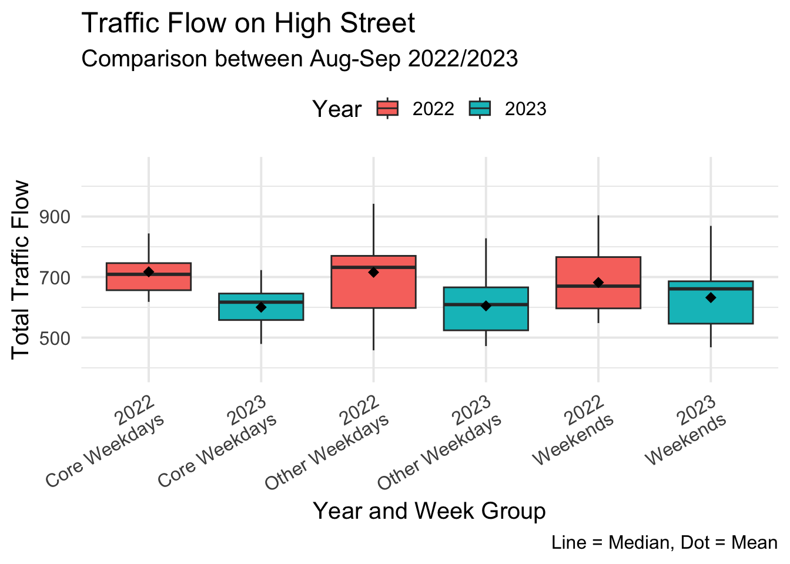
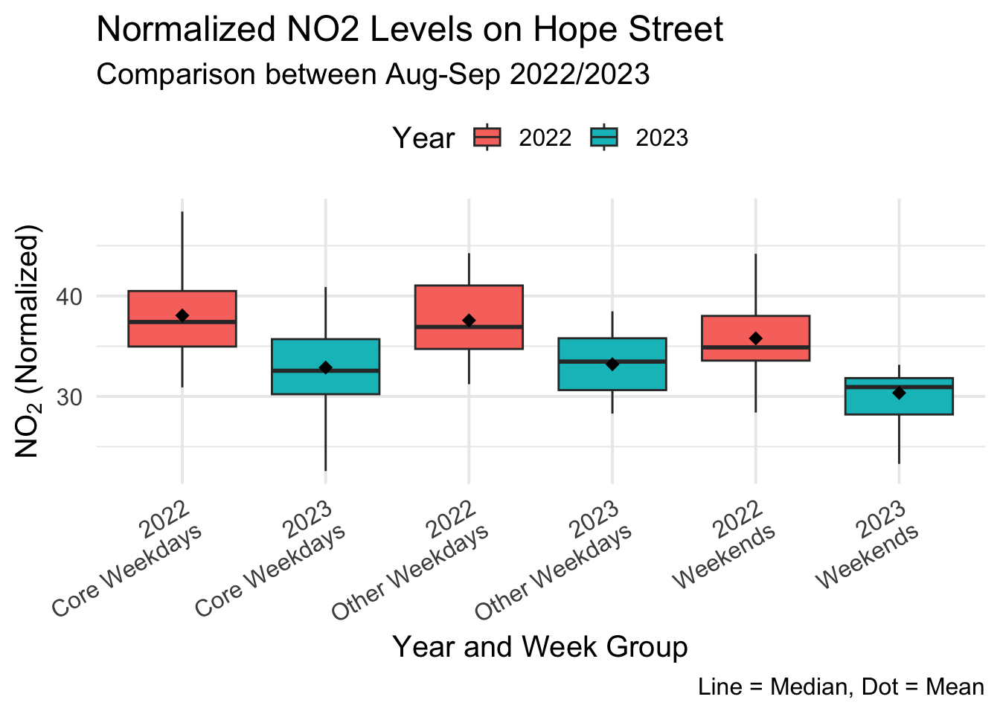

options(scipen = 999)
library(tidyverse)Warning: package 'ggplot2' was built under R version 4.3.1library(rstatix)
library(mgcv)
#library(sf)
#library(mapview)
#library(openair)Findings Transport
Here is a step-by-step process of our analysis. We ensure that the codes are fully reproducible. We ran the code on a macOS machine. If you’re using a different operating system or have a different language set as your locale, you may encounter some errors.
For the analysis, we used a few packages tidyverse for data cleaning, analysis, and visualisation, mgcv for Generalised Additive Models (GAM), and rstatix for Wilcox Sign Rank Test. Note sf, mapview, and openair packages were used to import dataset and explore the preprocessed dataset, so we left them.
options(scipen = 999)
library(tidyverse)Warning: package 'ggplot2' was built under R version 4.3.1library(rstatix)
library(mgcv)
#library(sf)
#library(mapview)
#library(openair)For traffic data, we load the traffic csv. To access the original traffic dataset please visit the Raw Data/Raw data SCOOT 2022/2023 folders (originally created by Li et al. (2024)). We chose the study period August 1st to September 30th in both 2022 and 2023.
For more information about traffic, please refer to the UBDC webpage https://www.ubdc.ac.uk/news/new-high-resolution-traffic-flow-dataset-available-from-ubdc.
traffic_raw <- read_csv("traffic.csv")
traffic_raw |>
filter(dt_date >= "2022-08-01" & dt_date <= "2022-09-30") |>
mutate(dt_year = as.factor(dt_year)) |>
select(siteId, dt_date, dt_year, week_group, total_flow) |>
arrange(dt_date) -> traffic_22
traffic_22# A tibble: 244 × 5
siteId dt_date dt_year week_group total_flow
<chr> <date> <fct> <chr> <dbl>
1 GA1571_Q 2022-08-01 2022 Other Weekdays 1018
2 GA2401_D 2022-08-01 2022 Other Weekdays 1207
3 GA5371_C 2022-08-01 2022 Other Weekdays 2477
4 GG2001_S 2022-08-01 2022 Other Weekdays 567
5 GA1571_Q 2022-08-02 2022 Core Weekdays 1033
6 GA2401_D 2022-08-02 2022 Core Weekdays 1225
7 GA5371_C 2022-08-02 2022 Core Weekdays 2546
8 GG2001_S 2022-08-02 2022 Core Weekdays 634
9 GA1571_Q 2022-08-03 2022 Core Weekdays 1073
10 GA2401_D 2022-08-03 2022 Core Weekdays 1338
# ℹ 234 more rowstraffic_raw |>
filter(dt_date >= "2023-08-01" & dt_date <= "2023-09-30") |>
mutate(dt_year = as.factor(dt_year)) |>
select(siteId, dt_date, dt_year, week_group, total_flow) |>
arrange(dt_date) -> traffic_23
traffic_23# A tibble: 244 × 5
siteId dt_date dt_year week_group total_flow
<chr> <date> <fct> <chr> <dbl>
1 GA1571_Q 2023-08-01 2023 Core Weekdays 1026
2 GA2401_D 2023-08-01 2023 Core Weekdays 1362
3 GA5371_C 2023-08-01 2023 Core Weekdays 2154
4 GG2001_S 2023-08-01 2023 Core Weekdays 664
5 GA1571_Q 2023-08-02 2023 Core Weekdays 1074
6 GA2401_D 2023-08-02 2023 Core Weekdays 1525
7 GA5371_C 2023-08-02 2023 Core Weekdays 2227
8 GG2001_S 2023-08-02 2023 Core Weekdays 639
9 GA1571_Q 2023-08-03 2023 Core Weekdays 1172
10 GA2401_D 2023-08-03 2023 Core Weekdays 1487
# ℹ 234 more rowsFor NO2, we used the openair R package and downloaded Glasgow’s High Street (GHSR) and Hope Street (GLA4) for which the roadside data were available.
Given the dataset, we filtered the data to align with the traffic data, and converted the years to factors which is a plot-friendly format in R.
no2 <- read_csv("no2.csv")
no2 |>
filter(dt_date >= "2022-08-01" & dt_date <= "2022-09-30") |>
select(code, dt_date, week_group, no2_daily) |>
mutate(dt_year = as.factor(2022)) -> no2_22
no2_22# A tibble: 183 × 5
code dt_date week_group no2_daily dt_year
<chr> <date> <chr> <dbl> <fct>
1 GHSR 2022-08-01 Other Weekdays 11.8 2022
2 GHSR 2022-08-02 Core Weekdays 7.53 2022
3 GHSR 2022-08-03 Core Weekdays 4.49 2022
4 GHSR 2022-08-04 Core Weekdays 21.5 2022
5 GHSR 2022-08-05 Other Weekdays 21.3 2022
6 GHSR 2022-08-06 Weekends 10.3 2022
7 GHSR 2022-08-07 Weekends 11.1 2022
8 GHSR 2022-08-08 Other Weekdays 14.9 2022
9 GHSR 2022-08-09 Core Weekdays 17.7 2022
10 GHSR 2022-08-10 Core Weekdays 21.4 2022
# ℹ 173 more rowsno2 |>
filter(dt_date >= "2023-08-01" & dt_date <= "2023-09-30") |>
select(code, dt_date, week_group, no2_daily) |>
mutate(dt_year = as.factor(2023)) -> no2_23
no2_23# A tibble: 183 × 5
code dt_date week_group no2_daily dt_year
<chr> <date> <chr> <dbl> <fct>
1 GHSR 2023-08-01 Core Weekdays 12.3 2023
2 GHSR 2023-08-02 Core Weekdays 10.9 2023
3 GHSR 2023-08-03 Core Weekdays 22.0 2023
4 GHSR 2023-08-04 Other Weekdays 12.6 2023
5 GHSR 2023-08-05 Weekends 12.0 2023
6 GHSR 2023-08-06 Weekends 14.8 2023
7 GHSR 2023-08-07 Other Weekdays 11.5 2023
8 GHSR 2023-08-08 Core Weekdays 12.9 2023
9 GHSR 2023-08-09 Core Weekdays 15.6 2023
10 GHSR 2023-08-10 Core Weekdays 14.8 2023
# ℹ 173 more rowsMeteorological data was downloaded from the nearest observation station from Glasgow city centre. By far Clincarthill (4.3km away) was the closest station. Using this link, we manually downloaded August-Sep 2022-2023.
Now, the next step is important. We first convert the wind direction from compass (e.g. NW) to meteorological convention (0-360 degrees). In the later stage, this will change to a mathematical convention.
Another step is that we are going to group the days of the week as Core weekdays (Tue-Thu), Other weekdays (Mon, Fri), and Weekends (Sat-Sun).
cc22_aug <- read_csv("clincarthill_22_aug.csv")Warning: One or more parsing issues, call `problems()` on your data frame for details,
e.g.:
dat <- vroom(...)
problems(dat)cc22_sep <- read_csv("clincarthill_22_sep.csv")Warning: One or more parsing issues, call `problems()` on your data frame for details,
e.g.:
dat <- vroom(...)
problems(dat)cc23_aug <- read_csv("clincarthill_23_aug.csv")Warning: One or more parsing issues, call `problems()` on your data frame for details,
e.g.:
dat <- vroom(...)
problems(dat)cc23_sep <- read_csv("clincarthill_23_sep.csv")Warning: One or more parsing issues, call `problems()` on your data frame for details,
e.g.:
dat <- vroom(...)
problems(dat)cc22 <- bind_rows(cc22_aug, cc22_sep)
cc23 <- bind_rows(cc23_aug, cc23_sep)
# Create a named vector mapping compass directions to degrees
compass_to_degrees <- c(
N = 0, NNE = 22.5, NE = 45, ENE = 67.5,
E = 90, ESE = 112.5, SE = 135, SSE = 157.5,
S = 180, SSW = 202.5, SW = 225, WSW = 247.5,
W = 270, WNW = 292.5, NW = 315, NNW = 337.5
)
cc22 |>
rename(dttm = `Report Date / Time`,
temp = `Air Temperature`,
hum = `Relative Humidity`,
ws = `Wind Speed`,
wd = `Wind Direction`) |>
select(dttm, temp, hum, ws, wd) |>
mutate(day_name = wday(dttm, label=TRUE),
dt_date = as_date(dttm),
week_group = case_when(day_name %in% c("Mon", "Fri") ~ "Other Weekdays",
day_name %in% c("Tue", "Wed", "Thu") ~ "Core Weekdays",
day_name %in% c("Sat", "Sun") ~ "Weekends")
) |>
group_by(dt_date, week_group) |>
summarise(ws = mean(ws, na.rm = T),
wd = mean(wd, na.rm = T),
hum = mean(hum, na.rm = T),
temp = mean(temp, na.rm = T)) |>
ungroup() -> weather_by_week
cc23 |>
rename(dttm = `Report Date / Time`,
temp = `Air Temperature`,
hum = `Relative Humidity`,
ws = `Wind Speed`,
wd = `Wind Direction`) |>
select(dttm, temp, hum, ws, wd) |>
mutate(day_name = wday(dttm, label=TRUE),
dt_date = as_date(dttm),
week_group = case_when(day_name %in% c("Mon", "Fri") ~ "Other Weekdays",
day_name %in% c("Tue", "Wed", "Thu") ~ "Core Weekdays",
day_name %in% c("Sat", "Sun") ~ "Weekends")
) |>
group_by(dt_date, week_group) |>
summarise(ws = mean(ws, na.rm = T),
wd = mean(wd, na.rm = T),
hum = mean(hum, na.rm = T),
temp = mean(temp, na.rm = T)) |>
ungroup() -> weather_by_week23Normalising NO2 with met data is a very important process to compare the concentration pre- to post- LEZ. Here I used no2_normalised to assign variables. This is because I use UK English in my day to day life.
To convert the degree convention to a mathematical convention we used the metric stated below. Degrees are converted to radians by multiplying by Radian per Degree (2π / 360 = 0.01745329).

u component represents wind blowing to the East (confusingly known as a “westerly”). v is wind to the North (a “southerly” ).
For more information, please refer to this link.
For the normalising process, we used the gam() function and smoothed windspeed(ws), easterly & southerly wind directtions, temperature, and relative humidity.
no2_22 |>
filter(code == "GHSR") |>
full_join(traffic_22 |> filter(siteId == "GG2001_S"), by = c("dt_date", "dt_year", "week_group")) |>
full_join(weather_by_week, by = c("dt_date", "week_group")) |>
mutate(u_wind = ws * sin(wd * pi / 180),
v_wind = ws * cos(wd * pi / 180)) -> df_highst_22
df_highst_22# A tibble: 61 × 13
code dt_date week_group no2_daily dt_year siteId total_flow ws wd
<chr> <date> <chr> <dbl> <fct> <chr> <dbl> <dbl> <dbl>
1 GHSR 2022-08-01 Other Weekd… 11.8 2022 GG200… 567 1.68 260.
2 GHSR 2022-08-02 Core Weekda… 7.53 2022 GG200… 634 5.39 271.
3 GHSR 2022-08-03 Core Weekda… 4.49 2022 GG200… 649 4.03 271.
4 GHSR 2022-08-04 Core Weekda… 21.5 2022 GG200… 650 1.94 267.
5 GHSR 2022-08-05 Other Weekd… 21.3 2022 GG200… 772 1.51 270.
6 GHSR 2022-08-06 Weekends 10.3 2022 GG200… 667 3.43 272.
7 GHSR 2022-08-07 Weekends 11.1 2022 GG200… 559 3.44 270.
8 GHSR 2022-08-08 Other Weekd… 14.9 2022 GG200… 565 2.18 272.
9 GHSR 2022-08-09 Core Weekda… 17.7 2022 GG200… 639 1.56 271.
10 GHSR 2022-08-10 Core Weekda… 21.4 2022 GG200… 678 1.57 222.
# ℹ 51 more rows
# ℹ 4 more variables: hum <dbl>, temp <dbl>, u_wind <dbl>, v_wind <dbl>gam_highst_22 <- gam(no2_daily ~ s(ws) + s(u_wind) + s(v_wind) + s(temp) + s(hum), data = df_highst_22)
summary(gam_highst_22)
Family: gaussian
Link function: identity
Formula:
no2_daily ~ s(ws) + s(u_wind) + s(v_wind) + s(temp) + s(hum)
Parametric coefficients:
Estimate Std. Error t value Pr(>|t|)
(Intercept) 18.8472 0.4413 42.71 <0.0000000000000002 ***
---
Signif. codes: 0 '***' 0.001 '**' 0.01 '*' 0.05 '.' 0.1 ' ' 1
Approximate significance of smooth terms:
edf Ref.df F p-value
s(ws) 5.5016 6.5094 1.481 0.292648
s(u_wind) 2.7822 3.5617 4.851 0.001937 **
s(v_wind) 0.9999 0.9999 0.089 0.767198
s(temp) 2.3131 2.8476 8.698 0.000207 ***
s(hum) 1.7664 2.2162 0.954 0.473086
---
Signif. codes: 0 '***' 0.001 '**' 0.01 '*' 0.05 '.' 0.1 ' ' 1
Rank: 45/46
R-sq.(adj) = 0.738 Deviance explained = 79.7%
GCV = 15.536 Scale est. = 11.878 n = 61df_highst_22$residuals <- residuals(gam_highst_22)
df_highst_22$no2_normalised <- df_highst_22$residuals + mean(df_highst_22$no2_daily)
df_highst_22# A tibble: 61 × 15
code dt_date week_group no2_daily dt_year siteId total_flow ws wd
<chr> <date> <chr> <dbl> <fct> <chr> <dbl> <dbl> <dbl>
1 GHSR 2022-08-01 Other Weekd… 11.8 2022 GG200… 567 1.68 260.
2 GHSR 2022-08-02 Core Weekda… 7.53 2022 GG200… 634 5.39 271.
3 GHSR 2022-08-03 Core Weekda… 4.49 2022 GG200… 649 4.03 271.
4 GHSR 2022-08-04 Core Weekda… 21.5 2022 GG200… 650 1.94 267.
5 GHSR 2022-08-05 Other Weekd… 21.3 2022 GG200… 772 1.51 270.
6 GHSR 2022-08-06 Weekends 10.3 2022 GG200… 667 3.43 272.
7 GHSR 2022-08-07 Weekends 11.1 2022 GG200… 559 3.44 270.
8 GHSR 2022-08-08 Other Weekd… 14.9 2022 GG200… 565 2.18 272.
9 GHSR 2022-08-09 Core Weekda… 17.7 2022 GG200… 639 1.56 271.
10 GHSR 2022-08-10 Core Weekda… 21.4 2022 GG200… 678 1.57 222.
# ℹ 51 more rows
# ℹ 6 more variables: hum <dbl>, temp <dbl>, u_wind <dbl>, v_wind <dbl>,
# residuals <dbl>, no2_normalised <dbl># High St 2023
no2_23 |>
filter(code == "GHSR") |>
full_join(traffic_23 |> filter(siteId == "GG2001_S"), by = c("dt_date", "dt_year", "week_group")) |>
full_join(weather_by_week23, by = c("dt_date", "week_group")) |>
mutate(u_wind = ws * sin(wd * pi / 180),
v_wind = ws * cos(wd * pi / 180)) -> df_highst_23
df_highst_23# A tibble: 61 × 13
code dt_date week_group no2_daily dt_year siteId total_flow ws wd
<chr> <date> <chr> <dbl> <fct> <chr> <dbl> <dbl> <dbl>
1 GHSR 2023-08-01 Core Weekda… 12.3 2023 GG200… 664 1.02 140.
2 GHSR 2023-08-02 Core Weekda… 10.9 2023 GG200… 639 1.30 105.
3 GHSR 2023-08-03 Core Weekda… 22.0 2023 GG200… 623 1.26 266.
4 GHSR 2023-08-04 Other Weekd… 12.6 2023 GG200… 828 1.09 262.
5 GHSR 2023-08-05 Weekends 12.0 2023 GG200… 869 0.474 157.
6 GHSR 2023-08-06 Weekends 14.8 2023 GG200… 576 0.886 243.
7 GHSR 2023-08-07 Other Weekd… 11.5 2023 GG200… 567 2.11 274.
8 GHSR 2023-08-08 Core Weekda… 12.9 2023 GG200… 610 1.87 267.
9 GHSR 2023-08-09 Core Weekda… 15.6 2023 GG200… 479 1.66 260.
10 GHSR 2023-08-10 Core Weekda… 14.8 2023 GG200… 497 0.577 147.
# ℹ 51 more rows
# ℹ 4 more variables: hum <dbl>, temp <dbl>, u_wind <dbl>, v_wind <dbl>gam_highst_23 <- gam(no2_daily ~ s(ws) + s(u_wind) + s(v_wind) + s(temp) + s(hum), data = df_highst_23)
summary(gam_highst_23)
Family: gaussian
Link function: identity
Formula:
no2_daily ~ s(ws) + s(u_wind) + s(v_wind) + s(temp) + s(hum)
Parametric coefficients:
Estimate Std. Error t value Pr(>|t|)
(Intercept) 13.9052 0.4359 31.9 <0.0000000000000002 ***
---
Signif. codes: 0 '***' 0.001 '**' 0.01 '*' 0.05 '.' 0.1 ' ' 1
Approximate significance of smooth terms:
edf Ref.df F p-value
s(ws) 1.000 1.000 5.185 0.02709 *
s(u_wind) 3.851 4.963 3.652 0.00676 **
s(v_wind) 1.000 1.000 2.454 0.12350
s(temp) 3.399 4.208 3.585 0.01027 *
s(hum) 1.000 1.000 0.083 0.77458
---
Signif. codes: 0 '***' 0.001 '**' 0.01 '*' 0.05 '.' 0.1 ' ' 1
R-sq.(adj) = 0.647 Deviance explained = 70.7%
GCV = 14.212 Scale est. = 11.591 n = 61df_highst_23$residuals <- residuals(gam_highst_23)
df_highst_23$no2_normalised <- df_highst_23$residuals + mean(df_highst_23$no2_daily)
df_highst_23# A tibble: 61 × 15
code dt_date week_group no2_daily dt_year siteId total_flow ws wd
<chr> <date> <chr> <dbl> <fct> <chr> <dbl> <dbl> <dbl>
1 GHSR 2023-08-01 Core Weekda… 12.3 2023 GG200… 664 1.02 140.
2 GHSR 2023-08-02 Core Weekda… 10.9 2023 GG200… 639 1.30 105.
3 GHSR 2023-08-03 Core Weekda… 22.0 2023 GG200… 623 1.26 266.
4 GHSR 2023-08-04 Other Weekd… 12.6 2023 GG200… 828 1.09 262.
5 GHSR 2023-08-05 Weekends 12.0 2023 GG200… 869 0.474 157.
6 GHSR 2023-08-06 Weekends 14.8 2023 GG200… 576 0.886 243.
7 GHSR 2023-08-07 Other Weekd… 11.5 2023 GG200… 567 2.11 274.
8 GHSR 2023-08-08 Core Weekda… 12.9 2023 GG200… 610 1.87 267.
9 GHSR 2023-08-09 Core Weekda… 15.6 2023 GG200… 479 1.66 260.
10 GHSR 2023-08-10 Core Weekda… 14.8 2023 GG200… 497 0.577 147.
# ℹ 51 more rows
# ℹ 6 more variables: hum <dbl>, temp <dbl>, u_wind <dbl>, v_wind <dbl>,
# residuals <dbl>, no2_normalised <dbl>bind_rows(df_highst_22, df_highst_23) -> highstHere is the plot for High Street.
ggplot(highst, aes(x = dt_date, y = no2_normalised)) +
geom_line() +
facet_wrap(~dt_year, scales = "free_x") +
labs(title = "Normalized NO2 Concentration",
x = "",
y = "Normalised NO2")Same work applies for Hope Street too.
no2_22 |>
filter(code == "GLA4") |>
full_join(traffic_22 |> filter(siteId == "GA2401_D"), by = c("dt_date", "dt_year", "week_group")) |>
full_join(weather_by_week, by = c("dt_date", "week_group")) |>
mutate(u_wind = ws * sin(wd * pi / 180),
v_wind = ws * cos(wd * pi / 180)) -> df_hopest22
df_hopest22# A tibble: 61 × 13
code dt_date week_group no2_daily dt_year siteId total_flow ws wd
<chr> <date> <chr> <dbl> <fct> <chr> <dbl> <dbl> <dbl>
1 GLA4 2022-08-01 Other Weekd… 25.7 2022 GA240… 1207 1.68 260.
2 GLA4 2022-08-02 Core Weekda… 11.3 2022 GA240… 1225 5.39 271.
3 GLA4 2022-08-03 Core Weekda… 19.0 2022 GA240… 1338 4.03 271.
4 GLA4 2022-08-04 Core Weekda… 26.3 2022 GA240… 1410 1.94 267.
5 GLA4 2022-08-05 Other Weekd… 29.2 2022 GA240… 1605 1.51 270.
6 GLA4 2022-08-06 Weekends 16.9 2022 GA240… 1828 3.43 272.
7 GLA4 2022-08-07 Weekends 15.6 2022 GA240… 1431 3.44 270.
8 GLA4 2022-08-08 Other Weekd… 27.7 2022 GA240… 1188 2.18 272.
9 GLA4 2022-08-09 Core Weekda… 28.2 2022 GA240… 1292 1.56 271.
10 GLA4 2022-08-10 Core Weekda… 34.0 2022 GA240… 1249 1.57 222.
# ℹ 51 more rows
# ℹ 4 more variables: hum <dbl>, temp <dbl>, u_wind <dbl>, v_wind <dbl>gam_hopest_22 <- gam(no2_daily ~ s(ws) + s(u_wind) + s(v_wind) + s(temp) + s(hum), data = df_hopest22)
summary(gam_hopest_22)
Family: gaussian
Link function: identity
Formula:
no2_daily ~ s(ws) + s(u_wind) + s(v_wind) + s(temp) + s(hum)
Parametric coefficients:
Estimate Std. Error t value Pr(>|t|)
(Intercept) 37.3175 0.5844 63.85 <0.0000000000000002 ***
---
Signif. codes: 0 '***' 0.001 '**' 0.01 '*' 0.05 '.' 0.1 ' ' 1
Approximate significance of smooth terms:
edf Ref.df F p-value
s(ws) 4.826 5.831 2.442 0.0446 *
s(u_wind) 1.000 1.000 67.773 <0.0000000000000002 ***
s(v_wind) 1.000 1.000 4.926 0.0311 *
s(temp) 1.455 1.772 1.151 0.2197
s(hum) 2.390 3.021 1.648 0.1837
---
Signif. codes: 0 '***' 0.001 '**' 0.01 '*' 0.05 '.' 0.1 ' ' 1
R-sq.(adj) = 0.859 Deviance explained = 88.4%
GCV = 25.765 Scale est. = 20.835 n = 61df_hopest22$residuals <- residuals(gam_hopest_22)
df_hopest22$no2_normalised <- df_hopest22$residuals + mean(df_hopest22$no2_daily)
df_hopest22# A tibble: 61 × 15
code dt_date week_group no2_daily dt_year siteId total_flow ws wd
<chr> <date> <chr> <dbl> <fct> <chr> <dbl> <dbl> <dbl>
1 GLA4 2022-08-01 Other Weekd… 25.7 2022 GA240… 1207 1.68 260.
2 GLA4 2022-08-02 Core Weekda… 11.3 2022 GA240… 1225 5.39 271.
3 GLA4 2022-08-03 Core Weekda… 19.0 2022 GA240… 1338 4.03 271.
4 GLA4 2022-08-04 Core Weekda… 26.3 2022 GA240… 1410 1.94 267.
5 GLA4 2022-08-05 Other Weekd… 29.2 2022 GA240… 1605 1.51 270.
6 GLA4 2022-08-06 Weekends 16.9 2022 GA240… 1828 3.43 272.
7 GLA4 2022-08-07 Weekends 15.6 2022 GA240… 1431 3.44 270.
8 GLA4 2022-08-08 Other Weekd… 27.7 2022 GA240… 1188 2.18 272.
9 GLA4 2022-08-09 Core Weekda… 28.2 2022 GA240… 1292 1.56 271.
10 GLA4 2022-08-10 Core Weekda… 34.0 2022 GA240… 1249 1.57 222.
# ℹ 51 more rows
# ℹ 6 more variables: hum <dbl>, temp <dbl>, u_wind <dbl>, v_wind <dbl>,
# residuals <dbl>, no2_normalised <dbl>no2_23 |>
filter(code == "GLA4") |>
full_join(traffic_23 |> filter(siteId == "GA2401_D"), by = c("dt_date", "dt_year","week_group")) |>
full_join(weather_by_week23, by = c("dt_date", "week_group")) |>
mutate(u_wind = ws * sin(wd * pi / 180),
v_wind = ws * cos(wd * pi / 180)) -> df_hopest23
df_hopest23# A tibble: 61 × 13
code dt_date week_group no2_daily dt_year siteId total_flow ws wd
<chr> <date> <chr> <dbl> <fct> <chr> <dbl> <dbl> <dbl>
1 GLA4 2023-08-01 Core Weekda… 41.6 2023 GA240… 1362 1.02 140.
2 GLA4 2023-08-02 Core Weekda… 46.7 2023 GA240… 1525 1.30 105.
3 GLA4 2023-08-03 Core Weekda… 31.4 2023 GA240… 1487 1.26 266.
4 GLA4 2023-08-04 Other Weekd… 32.6 2023 GA240… 1443 1.09 262.
5 GLA4 2023-08-05 Weekends 38.9 2023 GA240… 1762 0.474 157.
6 GLA4 2023-08-06 Weekends 32.9 2023 GA240… 1476 0.886 243.
7 GLA4 2023-08-07 Other Weekd… 31.8 2023 GA240… 1425 2.11 274.
8 GLA4 2023-08-08 Core Weekda… 30.9 2023 GA240… 1298 1.87 267.
9 GLA4 2023-08-09 Core Weekda… 33.1 2023 GA240… 1443 1.66 260.
10 GLA4 2023-08-10 Core Weekda… 41.9 2023 GA240… 1398 0.577 147.
# ℹ 51 more rows
# ℹ 4 more variables: hum <dbl>, temp <dbl>, u_wind <dbl>, v_wind <dbl>gam_hopest_23 <- gam(no2_daily ~ s(ws) + s(u_wind) + s(v_wind) + s(temp) + s(hum), data = df_hopest23)
summary(gam_hopest_23)
Family: gaussian
Link function: identity
Formula:
no2_daily ~ s(ws) + s(u_wind) + s(v_wind) + s(temp) + s(hum)
Parametric coefficients:
Estimate Std. Error t value Pr(>|t|)
(Intercept) 32.2629 0.5525 58.39 <0.0000000000000002 ***
---
Signif. codes: 0 '***' 0.001 '**' 0.01 '*' 0.05 '.' 0.1 ' ' 1
Approximate significance of smooth terms:
edf Ref.df F p-value
s(ws) 1.000 1.000 2.517 0.1193
s(u_wind) 3.704 4.683 12.649 0.000000767 ***
s(v_wind) 2.982 3.656 1.509 0.2366
s(temp) 4.152 5.080 4.043 0.0039 **
s(hum) 1.000 1.000 0.750 0.3908
---
Signif. codes: 0 '***' 0.001 '**' 0.01 '*' 0.05 '.' 0.1 ' ' 1
R-sq.(adj) = 0.861 Deviance explained = 89.1%
GCV = 24.088 Scale est. = 18.624 n = 61df_hopest23$residuals <- residuals(gam_hopest_23)
df_hopest23$no2_normalised <- df_hopest23$residuals + mean(df_hopest23$no2_daily)
df_hopest23# A tibble: 61 × 15
code dt_date week_group no2_daily dt_year siteId total_flow ws wd
<chr> <date> <chr> <dbl> <fct> <chr> <dbl> <dbl> <dbl>
1 GLA4 2023-08-01 Core Weekda… 41.6 2023 GA240… 1362 1.02 140.
2 GLA4 2023-08-02 Core Weekda… 46.7 2023 GA240… 1525 1.30 105.
3 GLA4 2023-08-03 Core Weekda… 31.4 2023 GA240… 1487 1.26 266.
4 GLA4 2023-08-04 Other Weekd… 32.6 2023 GA240… 1443 1.09 262.
5 GLA4 2023-08-05 Weekends 38.9 2023 GA240… 1762 0.474 157.
6 GLA4 2023-08-06 Weekends 32.9 2023 GA240… 1476 0.886 243.
7 GLA4 2023-08-07 Other Weekd… 31.8 2023 GA240… 1425 2.11 274.
8 GLA4 2023-08-08 Core Weekda… 30.9 2023 GA240… 1298 1.87 267.
9 GLA4 2023-08-09 Core Weekda… 33.1 2023 GA240… 1443 1.66 260.
10 GLA4 2023-08-10 Core Weekda… 41.9 2023 GA240… 1398 0.577 147.
# ℹ 51 more rows
# ℹ 6 more variables: hum <dbl>, temp <dbl>, u_wind <dbl>, v_wind <dbl>,
# residuals <dbl>, no2_normalised <dbl>bind_rows(df_hopest22, df_hopest23) -> hopestHere is a plot.
ggplot(hopest, aes(x = dt_date, y = no2_normalised)) +
geom_line() +
facet_wrap(~dt_year, scales = "free_x") +
labs(title = "Normalised NO2 Concentration",
x = "",
y = expression("NO"[2] * " (Normalized)"))Okay now, is it now time to move on to the stats test? No! We have one more step to go 😅
Since this study compares 2022 to 2023 by week day categories, we need to makes sure that the numbers of days are equivalent between the two groups.
highst |>
group_by(dt_year, week_group) |>
summarise(n = n())`summarise()` has grouped output by 'dt_year'. You can override using the
`.groups` argument.# A tibble: 6 × 3
# Groups: dt_year [2]
dt_year week_group n
<fct> <chr> <int>
1 2022 Core Weekdays 27
2 2022 Other Weekdays 18
3 2022 Weekends 16
4 2023 Core Weekdays 27
5 2023 Other Weekdays 17
6 2023 Weekends 17In High Street, we see that the core weekdays are equal, but the other weekdays and weekends have a difference.
hopest |>
group_by(dt_year, week_group) |>
summarise(n = n())`summarise()` has grouped output by 'dt_year'. You can override using the
`.groups` argument.# A tibble: 6 × 3
# Groups: dt_year [2]
dt_year week_group n
<fct> <chr> <int>
1 2022 Core Weekdays 27
2 2022 Other Weekdays 18
3 2022 Weekends 16
4 2023 Core Weekdays 27
5 2023 Other Weekdays 17
6 2023 Weekends 17Sam job is done for Hope Street.
# Set seed for reproducibility (optional)
set.seed(123)
# Remove one randomly selected row from "Other Weekdays" where "dt_year" == 2022
highst1 <- highst %>%
filter(!(row_number() %in% sample(which(week_group == "Other Weekdays" & dt_year == 2022), 1)))
# Remove one randomly selected row from "Weekends" where "dt_year" == 2023
highst2 <- highst1 %>%
filter(!(row_number() %in% sample(which(week_group == "Weekends" & dt_year == 2023), 1)))
highst2 |>
group_by(week_group, dt_year) |>
summarise(traffic = mean(total_flow),
traffic_sd = sd(total_flow),
traffic_med = median(total_flow),
no2 = mean(no2_normalised),
no2_sd = sd(no2_normalised),
no2_med = median(no2_normalised))`summarise()` has grouped output by 'week_group'. You can override using the
`.groups` argument.# A tibble: 6 × 8
# Groups: week_group [3]
week_group dt_year traffic traffic_sd traffic_med no2 no2_sd no2_med
<chr> <fct> <dbl> <dbl> <dbl> <dbl> <dbl> <dbl>
1 Core Weekdays 2022 717. 86.0 709 19.6 2.82 19.5
2 Core Weekdays 2023 600. 76.0 617 14.6 2.43 14.2
3 Other Weekdays 2022 731. 147. 745 18.9 3.57 19.1
4 Other Weekdays 2023 605. 98.7 609 14.5 3.00 14.3
5 Weekends 2022 682. 112. 670 17.9 2.42 18.4
6 Weekends 2023 639. 109. 664 12.2 3.61 11.9# Remove one randomly selected row from "Other Weekdays" where "dt_year" == 2022
hopest1 <- hopest %>%
filter(!(row_number() %in% sample(which(week_group == "Other Weekdays" & dt_year == 2022), 1)))
# Remove one randomly selected row from "Weekends" where "dt_year" == 2023
hopest2 <- hopest1 %>%
filter(!(row_number() %in% sample(which(week_group == "Weekends" & dt_year == 2023), 1)))
hopest |>
group_by(week_group, dt_year) |>
summarise(traffic = mean(total_flow),
traffic_sd = sd(total_flow),
traffic_med = median(total_flow),
no2 = mean(no2_normalised),
no2_sd = sd(no2_normalised),
no2_med = median(no2_normalised))`summarise()` has grouped output by 'week_group'. You can override using the
`.groups` argument.# A tibble: 6 × 8
# Groups: week_group [3]
week_group dt_year traffic traffic_sd traffic_med no2 no2_sd no2_med
<chr> <fct> <dbl> <dbl> <dbl> <dbl> <dbl> <dbl>
1 Core Weekdays 2022 1339. 98.2 1338 38.1 4.21 37.4
2 Core Weekdays 2023 1368. 107. 1383 32.9 3.88 32.6
3 Other Weekdays 2022 1444. 219. 1432. 37.6 3.70 36.9
4 Other Weekdays 2023 1489. 206. 1443 33.2 3.17 33.5
5 Weekends 2022 1701. 200. 1729 35.8 4.31 34.9
6 Weekends 2023 1725. 292. 1650 30.3 3.87 30.9Okay, now we are ready to run the Wilcox Signed Rank Test. Note this is a “paired” test, thus the observations before and after have to match perfectly.
First, we run the code for High Street.
highst2 |>
group_by(week_group) |>
wilcox_test(total_flow ~ dt_year, paired = T)|>
as.data.frame() week_group .y. group1 group2 n1 n2 statistic p
1 Core Weekdays total_flow 2022 2023 27 27 359 0.0000465
2 Other Weekdays total_flow 2022 2023 17 17 122 0.0305000
3 Weekends total_flow 2022 2023 16 16 106 0.0507000ggplot(highst, aes(x = interaction(dt_year, week_group), y = total_flow, fill = dt_year)) +
geom_boxplot(outlier.shape = NA) + # Remove outlier points
stat_summary(fun=mean, geom="point", shape=18, size=3, color="black", fill="black") + # Add mean points
labs(
title = "Traffic Flow on High Street",
subtitle = "Comparison between Aug-Sep 2022/2023",
x = "Year and Week Group",
y = "Total Traffic Flow",
fill = "Year"
) +
theme_minimal(base_size = 15) + # Use a minimal theme with larger base font size
theme(
#plot.title = element_text(hjust = 0.5), # Center the plot title
axis.text.x = element_text(angle = 30, hjust = 1, vjust = 1), # Rotate x-axis labels and adjust justification
legend.position = "top" # Position the legend at the top
) +
scale_x_discrete(labels = function(x) gsub("\\.", "\n", x)) # Replace dots with newlines in x-axis labels
#ggsave("traffic_flow_highst.jpg", width = 6.5, height = 5.5)We do the same job for Hope Street.
hopest2 |>
group_by(week_group) |>
wilcox_test(total_flow ~ dt_year, paired = T)|>
as.data.frame() week_group .y. group1 group2 n1 n2 statistic p
1 Core Weekdays total_flow 2022 2023 27 27 136 0.211
2 Other Weekdays total_flow 2022 2023 17 17 50 0.366
3 Weekends total_flow 2022 2023 16 16 61 0.744ggplot(hopest, aes(x = interaction(dt_year, week_group), y = total_flow, fill = dt_year)) +
geom_boxplot(outlier.shape = NA) + # Remove outlier points
stat_summary(fun=mean, geom="point", shape=18, size=3, color="black", fill="black") + # Add mean points
labs(
title = "Traffic Flow on Hope Street",
subtitle = "Comparison between Aug-Sep 2022/2023",
x = "Year and Week Group",
y = "Total Traffic Flow",
fill = "Year"
) +
theme_minimal(base_size = 15) + # Use a minimal theme with larger base font size
theme(
#plot.title = element_text(hjust = 0.5), # Center the plot title
axis.text.x = element_text(angle = 30, hjust = 1, vjust = 1), # Rotate x-axis labels and adjust justification
legend.position = "top" # Position the legend at the top
) +
scale_x_discrete(labels = function(x) gsub("\\.", "\n", x)) # Replace dots with newlines in x-axis labelsHigh Street
highst2 |>
group_by(week_group) |>
wilcox_test(no2_normalised ~ dt_year, paired = T) |>
as.data.frame() week_group .y. group1 group2 n1 n2 statistic p
1 Core Weekdays no2_normalised 2022 2023 27 27 373 0.000000149
2 Other Weekdays no2_normalised 2022 2023 17 17 153 0.000015300
3 Weekends no2_normalised 2022 2023 16 16 130 0.000427000# NO2 Normalized Comparison
ggplot(highst, aes(x = interaction(dt_year, week_group), y = no2_normalised, fill = dt_year)) +
geom_boxplot(outlier.shape = NA) + # Remove outlier points
ylim(0,30) +
stat_summary(fun=mean, geom="point", shape=18, size=3, color="black", fill="black") + # Add mean points
labs(
title = "Normalized NO2 Levels on High Street",
subtitle = "Comparison between Aug-Sep 2022/2023",
x = "Year and Week Group",
y = expression("NO"[2] * " (Normalized)"),
fill = "Year"
) +
theme_minimal(base_size = 15) + # Use a minimal theme with larger base font size
theme(
#plot.title = element_text(hjust = 0.5), # Center the plot title
axis.text.x = element_text(angle = 30, hjust = 1, vjust = 1), # Rotate x-axis labels and adjust justification
legend.position = "top" # Position the legend at the top
) +
scale_x_discrete(labels = function(x) gsub("\\.", "\n", x)) #ggsave("normalized_no2_highst.jpg", width = 6.5, height = 5.5)Hope Street
hopest2 |>
group_by(week_group) |>
wilcox_test(no2_normalised ~ dt_year, paired = T)|>
as.data.frame() week_group .y. group1 group2 n1 n2 statistic p
1 Core Weekdays no2_normalised 2022 2023 27 27 338 0.000125
2 Other Weekdays no2_normalised 2022 2023 17 17 141 0.001070
3 Weekends no2_normalised 2022 2023 16 16 128 0.000763ggplot(hopest, aes(x = interaction(dt_year, week_group), y = no2_normalised, fill = dt_year)) +
geom_boxplot(outlier.shape = NA) + # Remove outlier points
stat_summary(fun=mean, geom="point", shape=18, size=3, color="black", fill="black") + # Add mean points
labs(
title = "Normalized NO2 Levels on Hope Street",
subtitle = "Comparison between Aug-Sep 2022/2023",
x = "Year and Week Group",
y = expression("NO"[2] * " (Normalized)"),
fill = "Year"
) +
theme_minimal(base_size = 15) + # Use a minimal theme with larger base font size
theme(
#plot.title = element_text(hjust = 0.5), # Center the plot title
axis.text.x = element_text(angle = 30, hjust = 1, vjust = 1), # Rotate x-axis labels and adjust justification
legend.position = "top" # Position the legend at the top
) +
scale_x_discrete(labels = function(x) gsub("\\.", "\n", x)) 
#ggsave("normalized_no2_hopest.jpg", width = 6.5, height = 5.5)